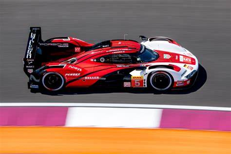
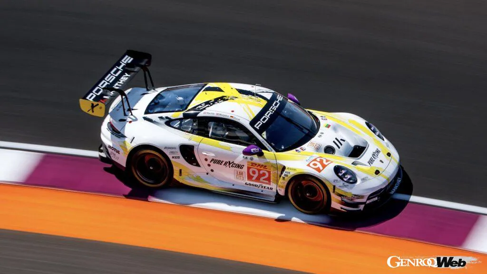

A estrutura e as categorias do WEC (World Endurance Championship) foram criadas para equilibrar performance, inovação tecnológica e acessibilidade, permitindo que tanto grandes montadoras quanto equipes independentes possam competir. O campeonato é dividido em duas categorias principais a partir de 2024: Hypercar e LMGT3
A categoria Hypercaré a elite do WEC. Ela foi introduzida em 2021 para substituir os antigos protótipos LMP1 e se tornou o topo do automobilismo de endurance. Ela é composta por dois tipos de carros: os LMH (Le Mans Hypercar) e os LMDh (Le Mans Daytona hybrid). Ambos são protótipos desenvolvidos exclusivamente para competição, mas com filosofias diferentes. Os LMH permitem mais liberdade de design e podem ser inteiramente construídos pelas montadoras, enquanto os LMDh usam um chassi padronizado fornecido por fabricantes homologados (como Dallara, Oreca, Multimatic ou Ligier) com liberdade para personalizar o motor e o visual. Entre as marcas que competem na Hypercar estão Ferrari, Toyota, Porsche, Cadillac, Peugeot, BMW, Alpine e, em breve, Hyundai com a Genesis Magma Racing, Ford e McLaren.
Essa imagem acima é do Hypercar da porsche, o Porsche 963.
POESCHE 963Já a categoria LMGT3 foi criada em 2024 para substituir os antigos carros GTE (GTE-Pro e GTE-Am). Essa nova classe utiliza carros de especificação GT3, que são versões de competição de modelos esportivos de rua, como o Porsche 911, Ferrari 296 GT3, Aston Martin Vantage, Corvette Z06 GT3.R, BMW M4 GT3, entre outros. Esses carros são mais próximos dos veículos comerciais e representam uma categoria de grande popularidade no automobilismo mundial, além de serem mais acessíveis para equipes privadas.
Essa imagem acima é do LMGT3 da Porsche, o Porsche 911 GT3 R.
PORSCHE 911 GT3 RCada uma dessas categorias tem seu próprio campeonato dentro do WEC. Isso significa que, embora os carros compartilhem a pista durante as corridas, eles disputam vitórias e pontos separadamente, dentro de suas classes. Durante uma corrida, pode haver até 30 ou 40 carros divididos entre Hypercar e LMGT3, todos competindo ao mesmo tempo, o que exige dos pilotos muita atenção, pois eles lidam constantemente com tráfego e diferenças de desempenho entre os carros.